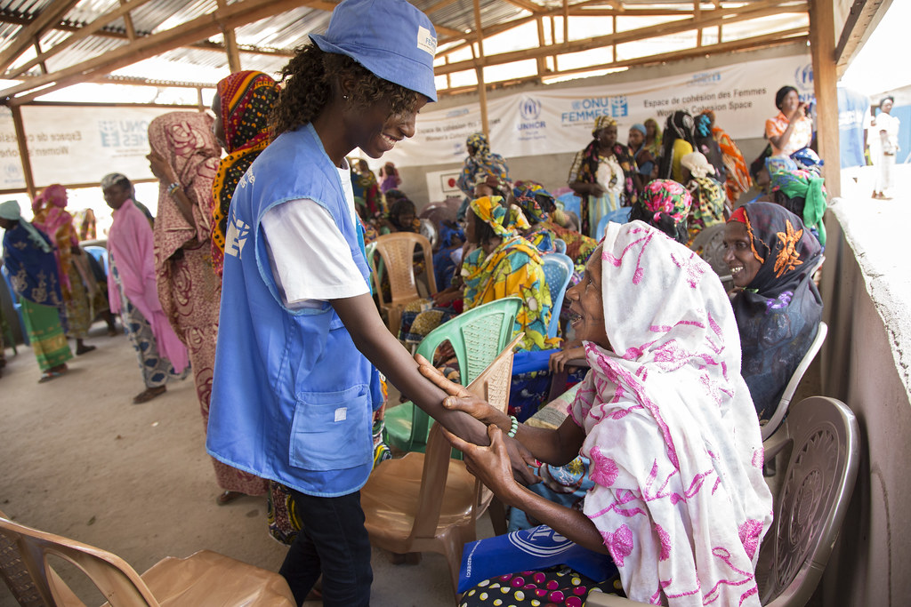

About Ubuntu Rise Foundation
Background of Ubuntu Rise Foundation
Ubuntu Rise Foundation is a non-profit organisation established with the vision of uplifting communities and improving the quality of life for vulnerable individuals and families. Inspired by the African philosophy of Ubuntu, “I am because we are”, the foundation believes that lasting change is achieved when people work together to support one another.

Together, we are making a difference, one community at a time.
Who we are
To empower people living in poverty through environmental sustainability, education, skills development and health awareness. We work with partners, volunteers and sponsors to give people the knowledge, resources and opportunities to become self-reliant.
A South Africa where everyone has the opportunity to grow in a supportive community setting.
We are committed to building stronger, more inclusive communities where everyone can grow, succeed and contribute. By promoting compassion, dignity and collaboration, we strive to create lasting social impact and inspire hope for future generations.
Our community in pictures
Select a photo to view it larger.
See our story
Watch a short video about the spirit of ubuntu.